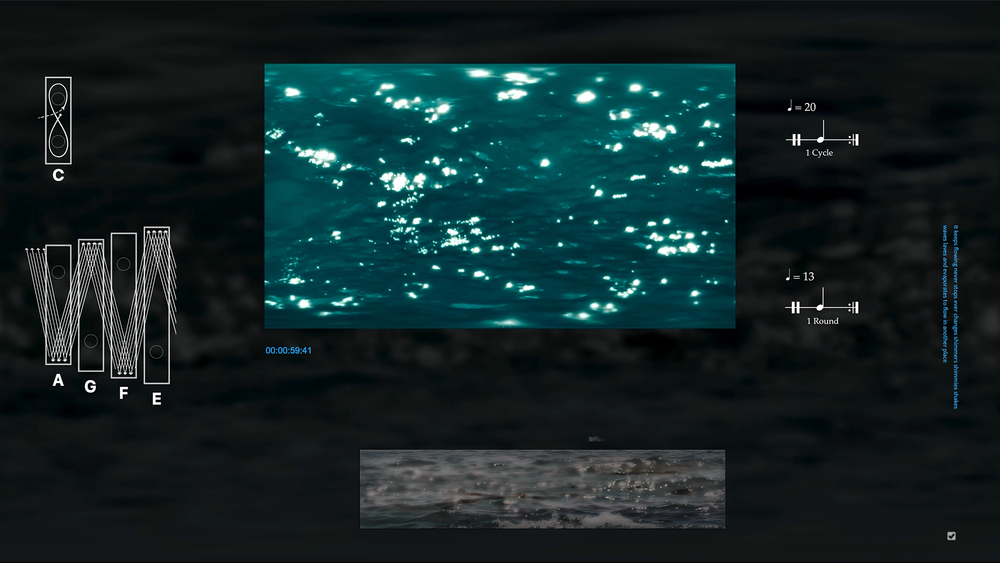

Woo Haran 우하란
Music composer and Visual artist
Woo Haran, born in 2000 in South Korea, is an emerging talent in the realms of music composition and visual art. He blends his creative works within the unique universe of [O8kk], a conceptual space where each symbol represents the moon, a cloud, and stars, forming the backdrop for his innovative storytelling.
Woo holds a Bachelor of Fine Arts in music composition from the California Institute of the Arts (CalArts), where he studied under renowned mentors such as Michael Pisaro, Ulrich Krieger, and Karen Tanaka.
Currently, Woo’s works are being showcased at various festivals and galleries. Therefore, this website offers limited visual information and written descriptions about his creations for the time being.
O, The Busy Idle Journey
2024
Woo Haran’s short film, O, The Busy Idle Journey, marks the first premiere work of the universe [O8kk]. In this film, Woo performs as Person Moon, taking on multiple creative roles. He produced, directed, and edited the film, and composed its improvisational score, featuring voice, hammered dulcimer, and chromatic harmonica, with a guest performer on alto saxophone.
Synopsis:
The full moon fusses around in the night sky, eventually falling to Earth as a human. This “Person Moon” wanders through surreal landscapes, seeming busy but not actually accomplishing anything. In the end, near water, it spreads one of the “Sounds of the Universe” to the world.
Stills of O, The Busy Idle Journey
윤슬 (Ever-Changing) is a 5-minute audiovisual installation. It is based on an original musical composition of the same name for an 8-key marimba and two channels of processed field recordings. The installation features clips of streaming water, shimmering over ripples—reflecting the meaning of the title “윤슬”—within a computational environment. It intermittently displays the inventive graphic notation for the 8-key marimba, fragments of original poems about water circulation, and visual elements reminiscent of video editing software. The juxtaposition of the uninterrupted flow of water against the structured, computer-generated visuals creates a compelling contrast.

Screenshot of 윤슬(Ever-Changing)
Na Ra Ga Da is a visualizer of the original musical composition of the same name. The cyclical structure of the composition is derived from an alphabetical/musical analysis of the word “Na Ra Ga Da,” a non-standard romanization of the Korean word “날아가다,” meaning “fly.” The soundscape incorporates an audio recording of boiling water, symbolizing water molecules “flying” into the air. It is complemented by improvisational performances on finger cymbals, a plastic fork, and a woodwind instrument. The video visually interprets the music, depicting the gradual change of evaporating water.
오슬 (Evee-Passing) is a 5-minute audiovisual installation. It is based on an original musical composition of the same name for an 8-key marimba and two channels of processed field recordings. The installation features clips of streaming water, shimmering over ripples—reflecting the meaning of the title “윤슬”—within a computational environment. It intermittently displays inventive graphic notation for the 8-key marimba, fragments of original poems about water circulation, and visual elements reminiscent of video editing software. The juxtaposition of the uninterrupted flow of water against the structured, computer-generated visuals creates a compelling contrast.
Sample Page of Hexurgy Instruction
Achievements
- 2nd place winner in Music Teachers’ National Association (MTNA),
National Composition Competition, Young Artists 2021 (United States)
- 3rd place winner in Great Composers International Competition,
Best Chopin Performance 2020 (United Kingdom)
- Poetry Award in The 47th Central Council Art and Literature Award
for Korea Reunification 2016 (South Korea)